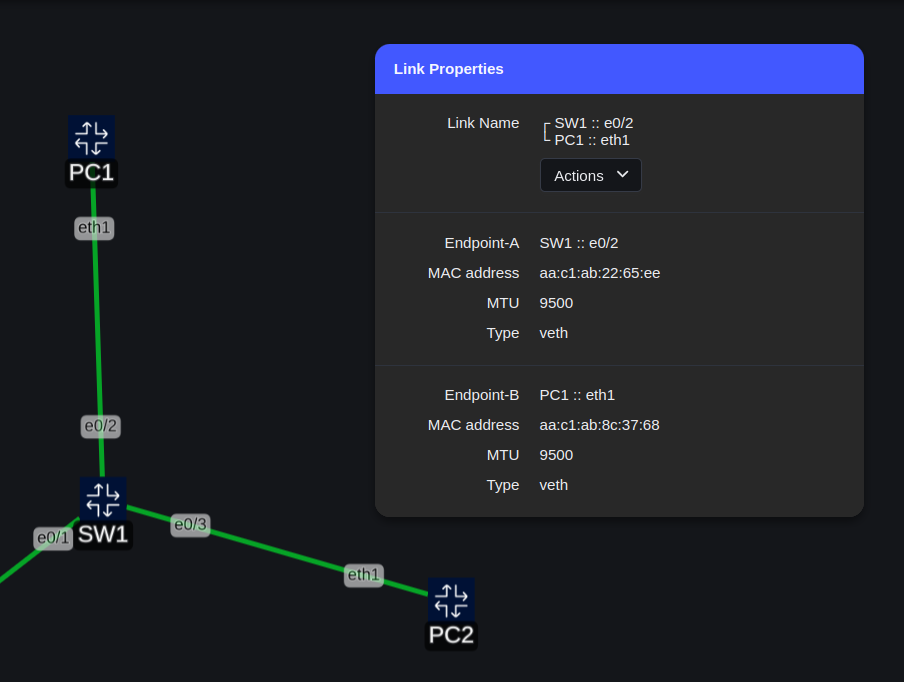
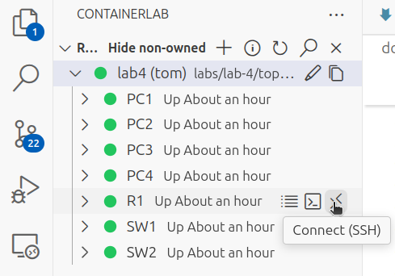
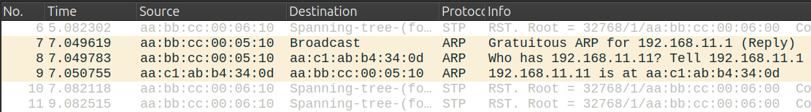

Lab 4: Ethernet, ARP & IP Adressen


Lab Topology
Wireshark-Lab: Ethernet und ARP
In dieser Übung analysierst du das Ethernet-Protokoll und das Address Resolution Protocol (ARP, RFC 826). Bevor du startest, stelle sicher, dass du die Grundlagen des Ethernet-MAC-Layers und von ARP verstanden hast.
ARP wird von einem IP-System verwendet, um zu einer bekannten IP-Adresse die passende MAC-Adresse zu ermitteln.
Vorbereitung
- Verbinde VS Code mit dem GitHub Codespace
- Starte das Lab-4 im GitHub Codespace
- Installiere Edgeshark im GitHub Codespace
Ping-Test mit Wireshark-Mitschnitt
Nach dem Lab-4 erfolgreich gestartet wurde:
- Verbinde dich mit der Kommandozeile von PC1 (Attach)
- Starte einen Wireshark-Mitschnitt auf dem Interface
eth1von PC1 (damit werden die Pakete auf dem Link zwischen PC1 und SW1 aufgezeichnet) - Führe auf PC1 folgenden Ping-Befehl aus (Ziel ist die IP-Adresse von PC3 hinter dem Router R1 an SW2):
ping 192.168.12.11
- Ping-Befehl nach ca. 5 Pings mit Ctrl+C stoppen
- Wireshark Aufzeichnung stoppen
Analyse der ersten Ping-Anfrage
Suche in der Wireshark-Paketliste das erste Ping-Paket (ICMP Echo Request). Markiere es und beantworte die folgenden Fragen:
Fragen
- Welche 48-Bit-Ethernet-Adresse hat der Sender?
- Wie lautet die Ethernet-Adresse des Empfängers?
- Ist das die Ethernet-Adresse von PC3? Wenn nein: Wessen Ethernet-Adresse ist es (Wissensfrage)?
- Welcher hexadezimale Wert steht im Ethernet Frametyp-Feld?
- Was bedeutet dieser Wert?
Info
Die Ethernet-Adressen der PCs können ihr auf der Kommandozeile der PCs wie folgt abgefragt werden (Interface eth1 ist mit dem Labornetz verbunden):
Beispiel
Alternativ: Ethernet-Adresse im TopopViewer anzeigen
Link zwischen PC und Switch mit der rechten Maus auswählen und im Kreismenüden Sektor Properties auswählen. Dann wird wie MAC-Adresse in einer Infobox Link Properties angezeigt:

{kind=link}
Analyse der Ping-Antwort
Suche das erste Ping-Antwortpaket (ICMP Echo Reply) und beantworte die folgenden Fragen:
Fragen
- Wie lautet die Ethernet-Adresse des Senders?
- Gehört die Ethernet-Adresse dem Sender oder dem Empfänger? Wenn nein: Von Welchem Gerät stammt die Ethernet-Adresse (Wissensfrage)?
- Welche Ziel-Ethernet-Adresse steht im Paket?
- Ist das die Adresse von PC1?
- Welcher hexadezimale Wert steht im 2-Byte Ethernet Frametyp-Feld?
- Was bedeutet dieser Wert?
- Welche weiteren Typfeld-Werte kennst du?
Spickzettel
Wenn du dir bei den Antworten auf die Wissensfragen unsicher bist, kannst du z.B. die Ethernet-Adressen des Routers wie folgt überprüfen:
- SSH-Verbindung zu
R1aufbauen:  - Nach Aufforderung das Passwort
admineingeben (Zeichen werden unterdrückt): - Anzeige der Interfaces von
R1: Ausgabe: Ausgabe: - Wird die Ausgabe mit dem Hinweis
--More--gestoppt, hat man folgende Möglichkeiten:- Mit der Taste Space die Ausgabe fortsetzen
- Mit der Taste Enter die Ausgabe zeilenweise fortsetzen
- Mit der Taste Q die Ausgabe abbrechen
{kind=link}
Warnung
Wenn du im TopoViewer den Link zwischen PC1 und R1 mit der Maus selektierst, erscheint eine Infobox mit den Link Properties. Die dort für R1angegebene MAC-Adresse ist NICHT die Adresse des Routers, sondern die Adresse des Containers, in welchem der Router als virtuelle Maschine (VM) läuft!
ARP- Cache auf Cisco Routern
Natürlich nutzt auch ein Router ARP-Requests, um die Ethernet-Adresse eines Endgerätes in einem direkt angeschlossenen IP-Subnets zu ermitteln und speichert die Daten aus den ARP-Replies in seinem eigenen ARP-Cache, der wie folgt angezeigt werden kann:
Ausgabe:R1#sh ip arp
Protocol Address Age (min) Hardware Addr Type Interface
Internet 192.168.11.1 - aabb.cc00.0510 ARPA Ethernet0/1
Internet 192.168.11.11 0 aac1.abb4.340d ARPA Ethernet0/1
Internet 192.168.12.1 - aabb.cc00.0520 ARPA Ethernet0/2
Internet 192.168.12.11 0 aac1.ab61.0e4c ARPA Ethernet0/2
R1#clear arp-cache
R1#sh arp
Protocol Address Age (min) Hardware Addr Type Interface
Internet 192.168.11.1 - aabb.cc00.0510 ARPA Ethernet0/1
Internet 192.168.11.11 0 aac1.abb4.340d ARPA Ethernet0/1
Internet 192.168.12.1 - aabb.cc00.0520 ARPA Ethernet0/2
Internet 192.168.12.11 0 aac1.ab61.0e4c ARPA Ethernet0/2
clear arp-cache löscht zwar tatsächlich die dynamischen Einträge, allerdings führt der Router sofort nach der Löschung neue ARP-Anfragen für die gelöschten Einträge aus, um zu überprüfen, ob die Endgeräte noch antworten und damit erreichbar sind, inkl. eines Gratuitous ARP mit der Adresse seines eigegenen Interfaces im jeweiligen IP-Subnetz (Prüfung auf ggf. doppelte Vergabe der IP-Adresse des Router-Interfaces):

{kind=link}
ARP-Tabelle betrachten
- Mit dem folgenden Befehl auf PC1 die ARP-Tabelle anzeigen (
neighist die Kurzform fürneighbours: Anzeige der bekannten Nachbarn im IP-Subnetz): - Für den Fall, dass die Tabelle leer ist (nach einiger Zeit verlieren Einträge ihre Gültigkeit und gehen vom Status
REACHABLEin den StatusSTALE, wenn keine weitere Kommunikation zur gelisteten IP-Adresse stattgefunden hat) oder keine Einträge mehr enthalten sind, die mit192.168.beginnen:- Wiederhole den Ping von PC1 nach PC3
- Dann erneut auf PC1
ip neigh showausführen
Aufgabe
Notiere die ARP-Tabelle und erkläre:
- Die Bedeutung der Spalten
- Die Bedeutung der Einträge
Info
Der ip-Befehl ist hier dokumentiert: ip(8) - Linux manual page
Das Kommando ip neighbour ist hier dokumentiert: ip-neighbour(8) - Linux manual page
ARP-Tabelle löschen
- Lösche die ARP-Tabelle für das Interface
eth1durch Eingabe des folgenden Befehls auf PC1: - Kontrolliere den Inhalt der ARP-Tabelle:
- Die Tabelle sollte nun leer sein (es werden keine dynamischen Einträge für Interface
eth1angezeigt)
Erneuter Mitschnitt mit Wireshark
- Starte Wireshark auf Interface
eth1von PC1 - Wiederhole den Ping von PC1 nach PC3
- Stoppe den Ping-Befehl auf PC1 nach 4-5 Pings über Ctrl+C
- Achte darauf: Du willst diesmal nur Ethernet- und ARP-Pakete sehen
- Hierfür passen wir die Wireshark-Ansicht entsprechend an und schalten die Protkollunterstützung für IPv4 aus
Protokollunterstützung für IPv4 deaktivieren
- Gehe im Wireshark-Menü auf:
Analyse >> Protokolle aktivieren - Deaktiviere IPv4 durch Abwählen des entsprechenden Kästchens
- Stelle sicher, dass der Anzeigebereich für die Paketbytes aktiviert ist
{kind=link}
{kind=link}
Anzeigebereich für Paketbytes anzeigen
{kind=link}
Analyse des ARP-Requests
Suche in Wireshark das ARP-Request-Paket, markiere es und beantworte die folgenden Fragen:
Fragen
- Wie lauten die Werte für Quell- und Zieladresse im Ethernet-Frame?
- Welchen hexadezimalen Wert hat das Ethernet Frametyp-Feld und welche Bedeutung hat dieser Wert?
- Nach wie vielen Bytes ab Frame-Beginn beginnt das Opcode-Feld („Operation“)? => Byteansicht in Wireshark einblenden
- Welcher Wert steht im Opcode/Operation-Feld?
- Welche Art ARP-Paket ist das?
- Enthält das ARP-Request-Paket die IP-Adresse des Senders?
- Wo steht im ARP-Request die IP-Adresse des Systems, dessen MAC-Adresse erfragt wird?
Analyse des ARP-Replies
Finde das ARP-Reply-Paket und beantworte die folgenden Fragen:
Fragen
- Nach wie vielen Bytes ab dem Beginn des ARP-Replies beginnt das Opcode-Feld? => Byteansicht in Wireshark einblenden
- Welcher Wert steht im Opcode/Operation-Feld?
- Wo im ARP-Reply-Paket steht die Antwort auf die im ARP-Request gestellte Frage?
- Wo im Paket findet man die IP-Adresse, die zur MAC-Adresse gehört?
- Welches sind die hexadezimale Werte der Quell- und Zieladressen des ARP-Replies?
- Welchen Systemen gehören diese Adressen?
Wireshark-Ansicht zurücksetzen
- Gehe im Wireshark-Menü wieder auf:
Analyse >> Protokolle aktivieren - Aktiviere Protokollunterstützung für IPv4 wieder durch Anwahl des entsprechenden Kästchens
Bonus-Aufgabe: Tracefile-Analyse
- Öffne in Wireshark das Tracefile über das Menü
Datei >> Öffnenoder Alt+D+O:ethernet-wireshark-trace1.pcapngim SharePoint-VerzeichnisKurs Netzwerk Grundlagen/Computer Networking - A Top-Down Approach (Kurose & Ross)/Wireshark Tracefiles/wireshark-traces-8.1 - Finde die ARP-Request-/Reply-Pakete in der Paketliste:
- ARP-Request des Wireshark-PCs
- ARP-Reply des Netzteilnehmers, nach dessen MAC-Adresse im ARP-Request gefragt wurde
Info
In diesem Szenario läuft Wireshark auf dem Rechner, welcher den ARP-Request gesendet hat.
Fragen
- Wie lautet die IP-Adresse des PCs, auf dem Wireshark läuft?
- Zu welcher IP-Adresse sucht der PC die Ethernet-Adresse und wie lautet die MAC-Adresse des gesuchten Gerätes?
- In diesem Netzwerk haben viele weitere Geräte einen ARP-Request gesendet (siehe Wireshark Paketliste). Warum sind dazu keine passenden ARP-Replies im Wireshark Tracefile enthalten?
Note
Diese Aufgabe ist unabhängig von den vorherigen Übungen. Der PC mit Wireshark war an einem Standard-Switchport und nicht an einem Mirror-Port angeschlossen.